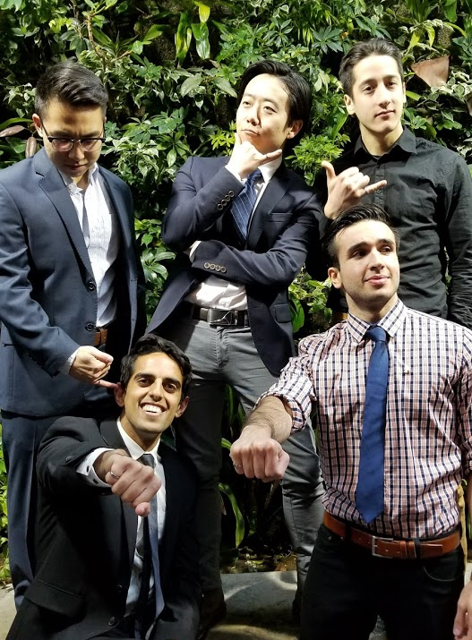
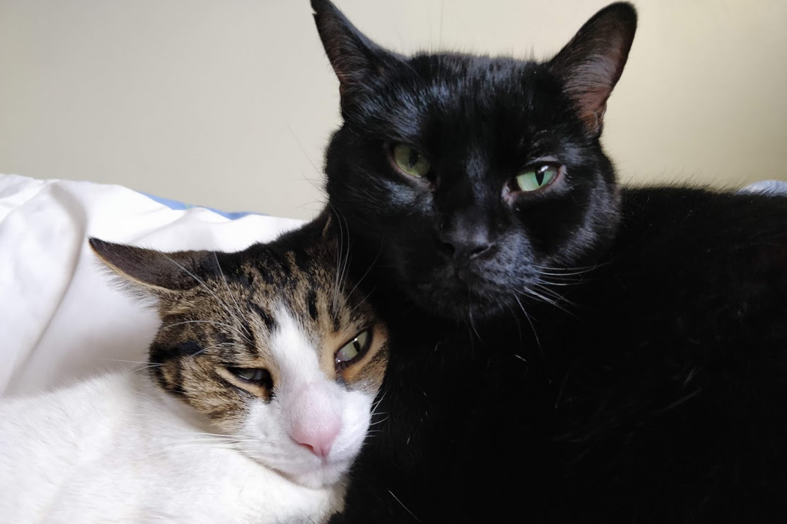
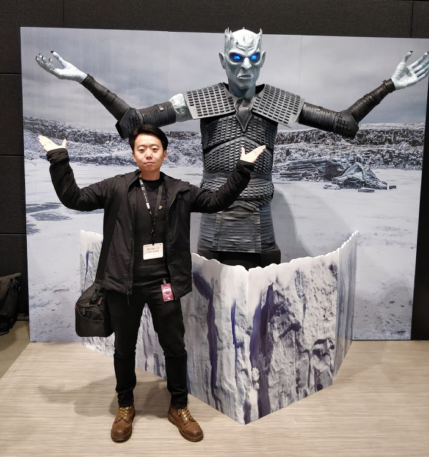

Howdy! I'm Javan, a Toronto-based product and UX designer.
I have been practicing UX as both an intern and freelance designer since early 2014. My focus is in creating evidence-driven design responses through storytelling. I have a multidisciplinary background in HCI and chemical engineering.
I'm a storyteller, geek, and that weird guy who listens to obscure Japanese music from the 80's. Let's chat!
I'm a storyteller, geek, and that weird guy who listens to obscure Japanese music from the 80's. Let's chat!
Currently tuning into

Timely!! | Anri

Bae 5 | YUNG BAE

Freakonomics Radio
Recent snaps



